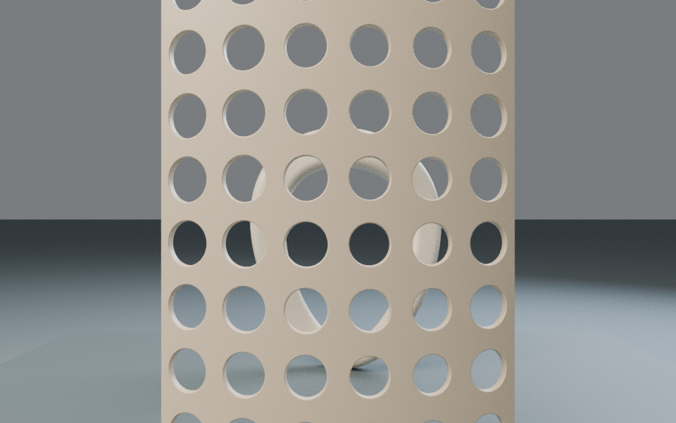
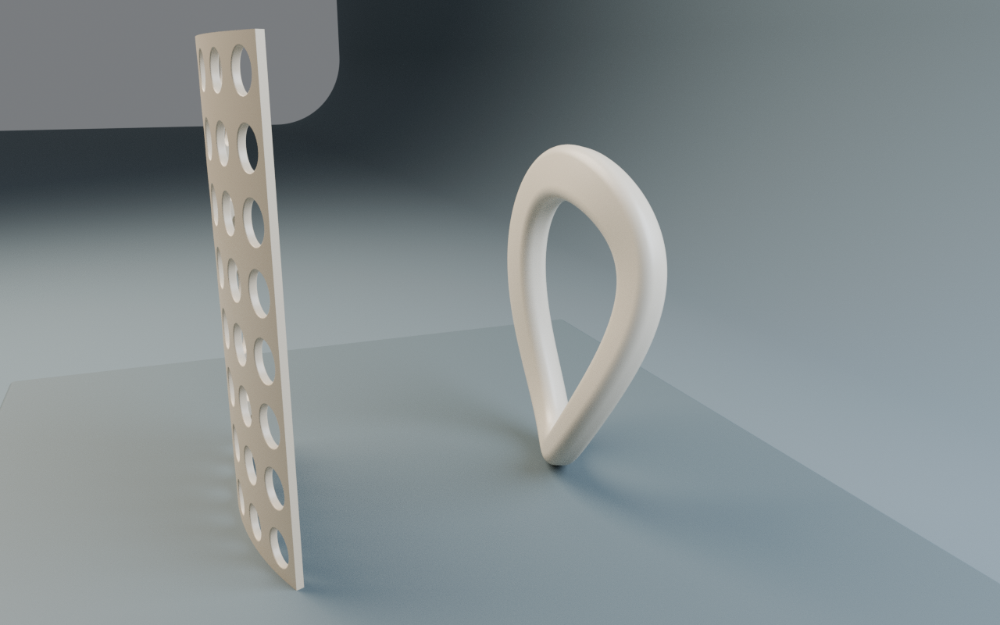

2026-11-02。第三维不是附加的展示窗口，而是这份网页的内容结构。007回环与008透幕保持真实原尺度，在一个固定世界中，镜头依次组织遮挡、穿孔与绕行。页面不要求先成功打开实时GL才能理解内容。
Bruno Simon的原作者作品集与独立HTML内容入口，促成本轮保留同义的原生目录和完整无脚本论述。没有加入驾驶或游戏化，因为它们不会帮助辨别孔隙。
Sou Fujimoto / Serpentine的空间设计档案启发“透明来自空隙和视点”的研究方法。我们没有复制其格构，而是验证同一个实际后景表面点，在三个相机下分别被前景遮住、穿孔可达、绕开可达。该指定视线不是所有像素或光学透过率。
Lusion Zero Tech的原作者说明将三维与内容推进绑定，本轮采用章节—镜头映射，不采用强制滚动驱动。奖项、技术能力与用户可用性证据分别记录，不宣称这些案例是绝对最好。
1. 初版硬地平线横穿孔内的回环片段，像另一块挡板。改成单向无缝背景后，侧视又露出背景边缘。最终改为环绕式连续曲面，保留两次失败图，不用修图掩盖。新增布景和原件一样进入场景与净空检查。
2. 原来的环上热点在实体内部，15mm容差恰好放过自身遮挡。改用实际第5661面中心，容差收紧到0.1mm，再分别证明“挡住、穿孔、绕开”。小型8px空心定位点保留44px可点击范围，减少对孔洞的覆盖。
3. 首次原生导航点击会把舞台滚出屏幕，虽然图像更新正确，用户却看不到新的镜头。现在成功切换后保留舞台与相应短论述，长文通过独立链接进入。失败图像不会同时把旧场景标为新章节。
4. 首版移动目录字号过小，改成12px；同状态摘要与三入口位于场景下方。320px CSS框中主要控制可见且没有横向溢出，但这不等于iPhone硬件验收。
5. 初版32samples只用于构图，正式三图为128samples、1280×800、CPU、无降噪。原模型材质和几何未为构图而改动。
同字节生成器可接受不同几何，并不代表语义锚点能照搬。Latitude与Horizon替换样本保留相机、物体变换、灯光和尺度；旧Orison表面点不再属于Latitude，旧可见掩码因此失效。迁移检查必须重新选择真实表面点并重算遮挡。完整失败与修订记录放在复用样本中。
两件同色陶质模型的深度关系仍需要前后章节和文字共同解释；孔中的片段并不是所有人一眼就能拼合。小标记证明一个样本，不应扩成遮住作品的大量线条。窄屏全景小，近景提高可读性但不能等价于桌面观察精度。
实时GPU光照、动态闪烁、实际触控与iPhone性能、200%缩放和完整读屏仍未验证。CPU图、数学关系、原生无GL阅读与设备GPU验收是四种不同证据。
继续采用：单一世界/相机配置；原始资产身份绑定；语义表面点+遮挡证明；加载与路由独立取消；首次视觉产出后的真实对标和缺陷修订。
不自动采用：固定热点坐标、假定任意形体可替换的配置全集、仅凭无横向溢出判定手机好用、为了更新技术而换渲染后端。本轮保持Three r180，后续升级必须有可运行GPU环境和明确回归收益。
首版硬背景线，及v0.2单向布景露边：


最终环绕布景，保持原模型与相机：


检索日期：2026-11-02 UTC。身份：独立研究。阶段：制作前的参考核对与评审准备，不是成品后评审。首版产出后仍须把实际画面和行为逐项对照，记录修改与复检。此文不把计划检查写成已通过。
本次使用联网检索与网页文本读取，未占用原生云浏览器预览，未实际操作参考站的实时 GPU 场景。以下“读取”指原作者网页可检索文本，不冒称观察到其所有像素、动画或移动端行为。没有下载、转载外部参考图、模型或代码。
来源：作者作品集；作者 HTML 替代页。
实际读取：作者介绍让访客驾车探索作品集；页面说明 Three.js 技术栈，列出源码入口。独立 HTML 页可读到普通分组的活动、项目和链接，并提供返回三维版本的入口。没有实际驾驶或测试性能。
本轮推断：空间动作应与取用内容有明确关系，同时保留无需学习空间操作的路径。作者项目证明的是一种已发布表达方式，不证明所有用户更喜欢它或完成任务更快。
采用：每个空间章节有同义原生锚点；直接深链与 Back/Forward 可恢复同一内容和镜头；不开实时也能完成阅读。中心章节入口解释“看见什么/为什么”，不是仅列模型名。
不采用：驾驶、物理小游戏、音效、隐藏秘密。它们增加学习成本，却不能帮助辨认本轮孔隙关系。复现成本：原生链接与状态解耦低；实时镜头与内容状态一致中；游戏化高且无本轮收益。
具体试验：关 JS 后逐章阅读；恢复 JS 后进入同一 hash；连续快速选章并取消实时，最终标题、图、镜头目标、焦点不得互相错位。
来源：Serpentine 委托机构项目页；Stage One 实际制作方项目页。
实际读取：官方档案说明2013展亭由白色细杆格构构成，意图形成可进入、半透明的空间。制作方说明不同观察位置会显露不同密度，有些部位显得不透、有些近乎透明。这里是项目方描述，不是本次现场观察或光学测量。
本轮推断：让观众移动视点，而保持模型固定，能把遮挡变化变成阅读结构；“透”不是材质透明，而可能来自真实空隙。展亭是成熟空间设计参照，不以其机构委托或知名度替代本轮审美/可用性测试。
采用：前景 Veil、后景 Orison 固定在一个世界。三个章节至少证明一个相同后景目标在不同射线上的可达性变化：首命中前景、经真实孔口到后景、绕过前景边缘到后景。
不采用：复制展亭格构、轮廓或施工体系；不把本轮小雕塑放大就宣称可建造。复现成本：共用世界坐标低；选定视线与相机中；连续全域遮挡证明高且本轮不承诺。
具体试验：每章记录视点、目标点、完整射线命中排序、距离与文件身份。中心射线通过不等于整件后景可见；二维孔口面积不是透光率，有限采样不是所有连续像素的证明。
实际读取：作者说明把实时三维视觉与滚动导航结合；项目页列出设计、开发、3D、WebGL职责，并有 FWA/Awwwards SOTD 链接。未打开获奖页逐条核奖，也未运行其真实体验。因此仅记录“作者页列有奖项链接”，不声明本次独立核实奖项，更不推出主流用户认可。
本轮推断：镜头变化应解释章节之间的区别，不只是华丽转场。采用的是内容—镜头映射方法，不是其视觉语言。
采用：遮挡/穿透/绕行分别绑定可复现镜头与不同解释；转场后仍在同一世界，可通过共同地标保持方位。
不采用：强制滚动驱动、劫持滚轮、过长必须观看的转场。复现成本：离散相机低；可取消过渡中；自由漫游加碰撞高，不是必要条件。
具体试验：减少动态偏好下立即到达同一镜头；中途切章只提交最后请求；空白地面不得触发章节；正文保持原生滚动。
来源：Three.js 官方 WebGPURenderer 文档。本次读取文档描述该渲染器优先选择支持的 WebGPU，否则回退 WebGL 2，也有显式后端选项。
本轮决定：记录能力，不升级冻结 Three 版本、不改浏览器安全设置，不把换渲染器当作绕过当前 GL 禁用的方法。两件原模型已有同版本复现链；当前优先解决真实空间语义、加载失败和无 GL 阅读。未来只有在受支持 GPU 环境可实际验收、材质/深度/性能回归收益明确时另开迁移试验。技术先进性与审美质量独立记录。
- F03：热点圆点中心才是投影点，文字在旁边；窄屏保留44px点击区域但缩小可见点，避免遮住模型。目标不重叠不等于形体可读。
- F03：路由图解码与实时初始化必须用独立会话令牌；旧失败不能取消新章节，旧解析只销毁自己的资源。
- F03：离线与实时共享相机、尺寸比例、世界变换。不要只看GLB顶点数判断几何身份；导出拆点可能合法。错误退出必须非零且检查新报告。
- 007：某投影没有封闭内空不代表三维孔洞消失；数值图绑定真实几何和坐标系。
- 008：图、图注、链接、测量值作为一笔提交；观察图必须解释模型，不能裁掉边界来假装更大。
给每条参考留下实际采用位置、前后图片/代码证据、至少一条不满足之处与修订，以及最终复检身份。参考文字本身不算迭代完成，不把这些站点称为绝对“最好”。